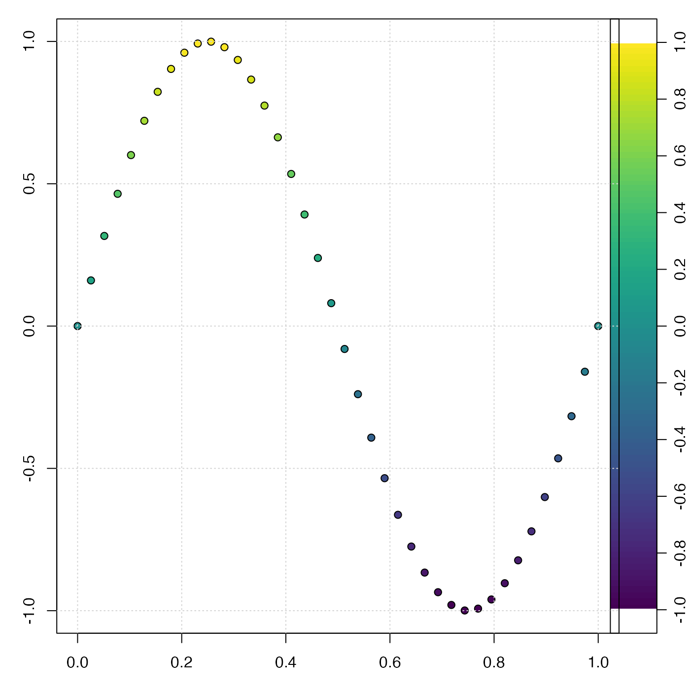
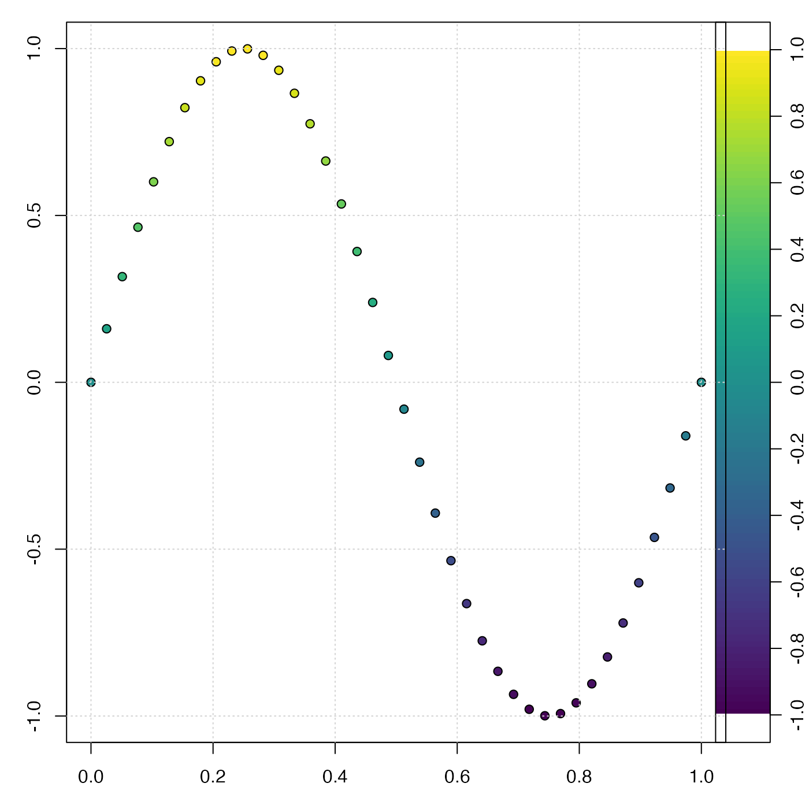

Create a mapping between numeric values and colors, for use in palettes and plots.
The return value can be used in various ways, including colorizing points
on scattergraphs, controlling images created by image() or imagep(),
drawing palettes with drawPalette(), etc.
Usage
colormap(
z = NULL,
zlim,
zclip = FALSE,
breaks,
col = oceColorsViridis,
name,
x0,
x1,
col0,
col1,
blend = 0,
missingColor,
debug = getOption("oceDebug")
)Arguments
- z
an optional vector or other set of numerical values to be examined. If
zis given, the return value will contain an item namedzcolthat will be a vector of the same length asz, containing a color for each point. Ifzis not given,zcolwill contain just one item, the color"black".- zlim
optional vector containing two numbers that specify the
zlimits for the color scale. This can only be provided in cases A and B, as defined in “Details”. For case A, ifzlimis not provided, then it is inferred by usingrangeExtended()onbreaks, if that is provided, or fromzotherwise. Also, in case A, it is an error to provide bothzlimandbreaks, unless the latter is of length 1, meaning the number of subdivisions to use within the range set byzlim. In case B,zlimis inferred from usingrangeExtended()onc(x0,x1). In case C, providingzlimyields an error message, because it makes no sense in the context of a named, predefined color scheme.- zclip
logical, with
TRUEindicating that z values outside the range ofzlimorbreaksshould be painted withmissingColorandFALSEindicating that these values should be painted with the nearest in-range color.- breaks
an optional indication of break points between color levels (see
image()). If this is provided, the argumentsnamethroughblendare all ignored (see “Details”). If it is provided, then it may either be a vector of break points, or a single number indicating the desired number of break points to be computed withpretty(z,breaks). In either case of non-missingbreaks, the resultant break points must number 1 plus the number of colors (seecol).- col
either a vector of colors or a function taking a numerical value as its single argument and returning a vector of colors. Prior to 2021-02-08, the default for
colwasoceColorsJet, but it was switched tooceColorsViridison that date. The value ofcolis ignored ifnameis provided, or ifx0throughcol1are provided.- name
an optional string naming a built-in colormap (one of
"gmt_relief","gmt_ocean","gmt_globe"or"gmt_gebco") or the name of a file or URL that contains a color map specification in GMT format. Ifnameis given, then it is passed tocolormapGMT(), which creates the colormap. Note that the colormap thus created has a fixed relationship between value and color, andzlim, only other argument that is examined isz(which may be used so thatzcolwill be defined in the return value), and warnings are issued if some irrelevant arguments are provided.- x0, x1, col0, col1
Vectors that specify a color map. They must all be the same length, with
x0andx1being numerical values, andcol0andcol1being colors. The colors may be strings (e.g."red") or colors as defined byrgb()orhsv().- blend
a number indicating how to blend colors within each band. This is ignored except when
x0throughcol1are supplied. A value of 0 means to usecol0[i]through the intervalx0[i]tox1[i]. A value of 1 means to usecol1[i]in that interval. A value between 0 and 1 means to blend between the two colors according to the stated fraction. Values exceeding 1 are an error at present, but there is a plan to use this to indicate sub-intervals, so a smooth palette can be created from a few colors.- missingColor
color to use for missing values. This cannot be provided if
nameis also provided (case C), because named schemes have pre-defined colors. For other cases,missingColordefaults to"gray", if it is not provided as an argument.- debug
a flag that turns on debugging. Set to 1 to get a moderate amount of debugging information, or to 2 to get more.
Value
a list containing the following (not necessarily in this order)
zcol, a vector of colors forz, ifzwas provided, otherwise"black"zlim, a two-element vector suitable as the argument of the same name supplied toimage()orimagep()breaksandcol, vectors of breakpoints and colors, suitable as the same-named arguments toimage()orimagep()zclipthe provided value ofzclip.x0andx1, numerical vectors of the sides of color intervals, andcol0andcol1, vectors of corresponding colors. The meaning is the same as on input. The purpose of returning these four vectors is to permit users to alter color mapping, as in example 3 in “Examples”.missingColor, a color that could be used to specify missing values, e.g. as the same-named argument toimagep().colfunction, a univariate function that returns a vector of colors, given a vector ofzvalues; see Example 6.
Details
colormap can be used in a variety of ways, including the following.
Case A. Supply some combination of arguments that is sufficient to define a mapping of value to color, without providing
x0,col0,x1orcol1(see case B for these), or providingname(see Case C). There are several ways to do this. One approach is to supplyzbut no other argument, in which casezlim, andbreakswill be determined fromz, and the defaultcolwill be used. Another approach is to specifybreaksandcoltogether, in the same way as they might be specified for the base R functionimage(). It is also possible to supply onlyzlim, in which casebreaksis inferred from that value. The figure below explains the (`breaks`, `col`) method of specifying a color mapping. Note that there must be one more break than color. This is the method used by e.g. [image()].
Case B. Supply
x0,col0,x1, andcol1, but notzlim,breaks,colorname. Thex0,col0,x1andcol1values specify a value-color mapping that is similar to that used for GMT color maps. The method works by usingseq()to interpolate between the elements of thex0vector. The same is done forx1. Similarly,colorRampPalette()is used to interpolate between the colors in thecol0vector, and the same is done forcol1. The figure above explains the (`x0`, `x1`, `col0`, `col1`) method of specifying a color mapping. Note that the each of the items has the same length. The case of `blend=0`, which has color `col0[i]` between `x0[i]` and `x1[i]`, is illustrated below.
Case C. Supply
nameand possibly alsoz, but notzlim,breaks,col,x0,col0,x1orcol1. Thenamemay be the name of a pre-defined color palette ("gmt_relief","gmt_ocean","gmt_globe"or"gmt_gebco"), or it may be the name of a file (or URL pointing to a file) that contains a color map in the GMT format (see “References”). Ifzis supplied along withname, thenzcolwill be set up in the return value, e.g. for use in colorizing points. Another method for finding colors for data points is to use thecolfunction()function in the return value.
Sample of Usage
# Example 2. topographic image with a standard color scheme
par(mfrow=c(1,1))
data(topoWorld)
cm <- colormap(name="gmt_globe")
imagep(topoWorld, breaks=cm$breaks, col=cm$col)
# Example 3. topographic image with modified colors,
# black for depths below 4km.
cm <- colormap(name="gmt_globe")
deep <- cm$x0 < -4000
cm$col0[deep] <- "black"
cm$col1[deep] <- "black"
cm <- colormap(x0=cm$x0, x1=cm$x1, col0=cm$col0, col1=cm$col1)
imagep(topoWorld, breaks=cm$breaks, col=cm$col)
# Example 4. image of world topography with water colorized
# smoothly from violet at 8km depth to blue
# at 4km depth, then blending in 0.5km increments
# to white at the coast, with tan for land.
cm <- colormap(x0=c(-8000, -4000, 0, 100),
x1=c(-4000, 0, 100, 5000),
col0=c("violet","blue","white","tan"),
col1=c("blue","white","tan","yellow"))
lon <- topoWorld[["longitude"]]
lat <- topoWorld[["latitude"]]
z <- topoWorld[["z"]]
imagep(lon, lat, z, breaks=cm$breaks, col=cm$col)
contour(lon, lat, z, levels=0, add=TRUE)
# Example 5. visualize GMT style color map
cm <- colormap(name="gmt_globe", debug=4)
plot(seq_along(cm$x0), cm$x0, pch=21, bg=cm$col0)
grid()
points(seq_along(cm$x1), cm$x1, pch=21, bg=cm$col1)
# Example 6. colfunction
cm <- colormap(c(0, 1))
x <- 1:10
y <- (x - 5.5)^2
z <- seq(0, 1, length.out=length(x))
drawPalette(colormap=cm)
plot(x, y, pch=21, bg=cm$colfunction(z), cex=3)References
The following references provide information on choosing colour schemes, that are suitable for viewers who have colour deficiencies.
Light, Adam, and Patrick J. Bartlein. "The End of the Rainbow? Color Schemes for Improved Data Graphics." Eos, Transactions American Geophysical Union 85, no. 40 (2004): 385. DOI: 10.1029/2004EO400002
Stephenson, David B. "Comment on 'Color Schemes for Improved Data Graphics', by A Light and P.J. Bartlein." Eos, Transactions American Geophysical Union 86, no. 20 (2005): 196. DOI: 10.1029/2005EO200005
Light, Adam, and Patrick J. Bartlein. "Reply to 'Comment on Color Schemes for Improved Data Graphics,' by A. Light and P.J. Bartlein'." Eos, Transactions American Geophysical Union 86, no. 20 (2005): 196–196. DOI: 10.1029/2005EO200006
See also
Other things related to colors:
colormapGMT(),
oceColors9B(),
oceColorsCDOM(),
oceColorsChlorophyll(),
oceColorsClosure(),
oceColorsDensity(),
oceColorsFreesurface(),
oceColorsGebco(),
oceColorsJet(),
oceColorsOxygen(),
oceColorsPAR(),
oceColorsPalette(),
oceColorsPhase(),
oceColorsSalinity(),
oceColorsTemperature(),
oceColorsTurbidity(),
oceColorsTurbo(),
oceColorsTwo(),
oceColorsVelocity(),
oceColorsViridis(),
oceColorsVorticity(),
ocecolors
Examples
library(oce)
# Example 1. color scheme for points on xy plot
x <- seq(0, 1, length.out = 40)
y <- sin(2 * pi * x)
par(mar = c(3, 3, 1, 1))
mar <- par("mar") # prevent margin creep by drawPalette()
# First, default breaks
c <- colormap(y)
drawPalette(c$zlim, col = c$col, breaks = c$breaks)
plot(x, y, bg = c$zcol, pch = 21, cex = 1)
grid()
 par(mar = mar)
# Second, 100 breaks, yielding a smoother palette
c <- colormap(y, breaks = 100)
drawPalette(c$zlim, col = c$col, breaks = c$breaks)
plot(x, y, bg = c$zcol, pch = 21, cex = 1)
grid()

par(mar = mar)
par(mar = mar)
# Second, 100 breaks, yielding a smoother palette
c <- colormap(y, breaks = 100)
drawPalette(c$zlim, col = c$col, breaks = c$breaks)
plot(x, y, bg = c$zcol, pch = 21, cex = 1)
grid()

par(mar = mar)